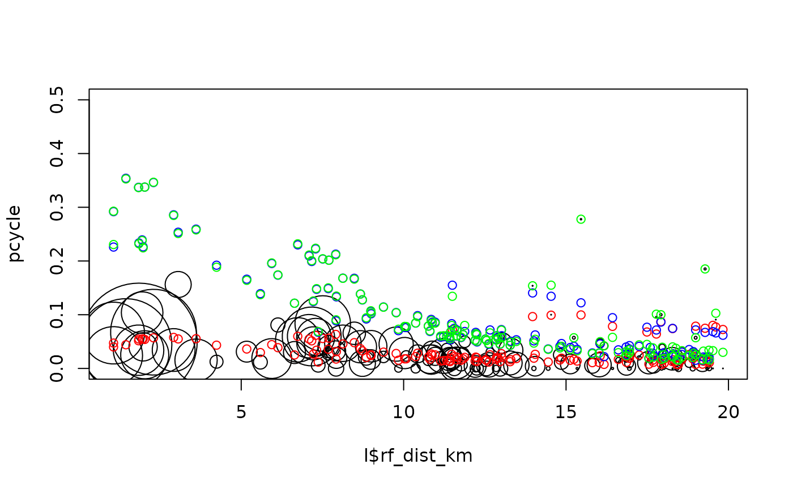

R/model.R
model_pcycle_pct_2020.RdModel cycling levels as a function of explanatory variables
model_pcycle_pct_2020(pcycle, distance, gradient, weights)
| pcycle | The proportion of trips by bike, e.g. 0.1, meaning 10% |
|---|---|
| distance | Vector distance numeric values of routes. |
| gradient | Vector gradient numeric values of routes. |
| weights | The weights used in the model, typically the total number of people per OD pair |
# l = get_pct_lines(region = "isle-of-wight") # l = get_pct_lines(region = "cambridgeshire") l = wight_lines_pct pcycle = l$bicycle / l$all pcycle_dutch = l$dutch_slc / l$all m1 = model_pcycle_pct_2020( pcycle, distance = l$rf_dist_km, gradient = l$rf_avslope_perc - 0.78, weights = l$all ) m2 = model_pcycle_pct_2020( pcycle_dutch, distance = l$rf_dist_km, gradient = l$rf_avslope_perc - 0.78, weights = l$all ) m3 = model_pcycle_pct_2020( pcycle_dutch, distance = l$rf_dist_km, gradient = l$rf_avslope_perc - 0.78, weights = rep(1, nrow(l)) ) m1#> #> Call: stats::glm(formula = pcycle ~ distance + sqrt(distance) + I(distance^2) + #> gradient + distance * gradient + sqrt(distance) * gradient, #> family = "quasibinomial", weights = weights) #> #> Coefficients: #> (Intercept) distance sqrt(distance) #> -6.79130 -1.04186 4.17349 #> I(distance^2) gradient distance:gradient #> 0.01768 0.63445 0.03433 #> sqrt(distance):gradient #> -0.48555 #> #> Degrees of Freedom: 136 Total (i.e. Null); 130 Residual #> Null Deviance: 657.4 #> Residual Deviance: 351.3 AIC: NA#> [1] 0.9998731#> [1] 34.18643#> [1] 34.18643pct_coefficients_2020 = c( alpha = -4.018 + 2.550, d1 = -0.6369 -0.08036, d2 = 1.988, d3 = 0.008775, h1 = -0.2555, i1 = 0.02006, i2 = -0.1234 ) pct_coefficients_2020#> alpha d1 d2 d3 h1 i1 i2 #> -1.468000 -0.717260 1.988000 0.008775 -0.255500 0.020060 -0.123400m2$coef#> (Intercept) distance sqrt(distance) #> -1.11820425 -0.63433011 1.61587978 #> I(distance^2) gradient distance:gradient #> 0.01071045 -0.43192958 -0.03685552 #> sqrt(distance):gradient #> 0.13203862#> [1] 0.9740929#> [1] 0.9653234